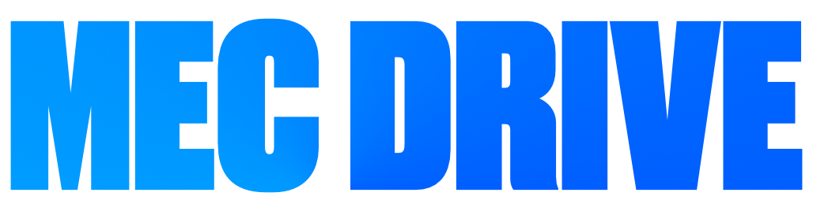

Pastas do Google Drive, exatamente como estão
Cole o link, escolha o que quer e baixe. Mesmos nomes, mesmas subpastas, sem zip e sem arquivo dividido em partes.
- 01vários links de uma vez
- 02nunca sobrescreve nem apaga
- 03continua de onde parou